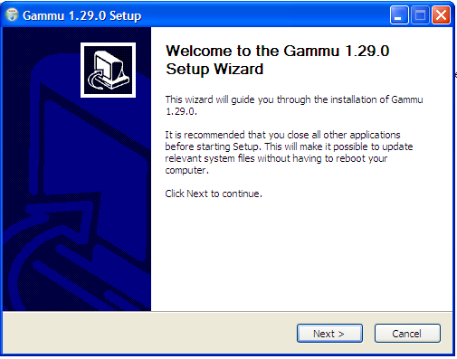
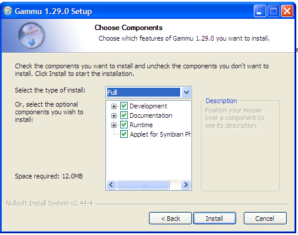

Program Gammu
Program utama SMS Broadcast adalah menggunakan Gammu. Berikut merupakan cara melakukan instalasi dan konfigurasi program gammu yang akan kita gunakan.
Instalasi Gammu
- Double click program Gammu-1.29.0-Windows.exe (file installer gammu), lalu ikuti petunjuk yang tertera pada proses instalasi gammu.

- Pada bagian proses instalasi seperti pada gambar di bawah ini, pilih "Select the type of install:" menjadi "Full", kemudian klik tombol Install. Lanjutkan sampai proses instalasi selesai.

Konfigurasi Gammu
- Buatlah file gammurc (tanpa extension) di dalam folder "c:\Program Files\Gammu 1.29.0\bin\" dengan isi sebagai berikut:
Opsi port disesuaikan dengan port mana yang dipakai modem pada komputer yang terkoneksi modem. (Cara melihat port modem dapat dilihat disini
- Lakukan pengetesan koneksi modem dan gammu. Melalui command prompt (cmd), jalankan perintah berikut:
- cd "c:\Program Files\Gammu 1.29.0\bin\" (enter)
- gammu --identify
- Gammu siap digunakan apabila proses identifikasi menghasilkan output seperti pada gambar diatas (informasi tentang perangkat modem telah dikenali oleh gammu).
- Lakukanlah pengetesan mengirim sms dengan menggunakan perintah berikut:
echo selamat pagi | gammu --sendsms TEXT [nomor_tujuan]
- Untuk mengintegrasikan gammu dengan database MySQL, maka kita akan menggunakan gammu-smsd. Pertama kita buat terlebih dahulu konfigurasi file smsdrc. Buatlah file smsdrc (tanpa extension) di dalam folder "c:\Program Files\Gammu 1.29.0\bin\". Isi dari file smsdrc adalah sebagai berikut:
Hal-hal yang perlu diperhatikan adalah:
- opsi port disesuaikan dengan port modem pada komputer sekarang (dapat dilihat disini).
- opsi logfile & logformat dapat di-non-aktifkan apabila tidak melakukan proses trobleshooting gammu (diberi tanda pagar "#" didepan opsi tersebut)
- opsi user, user yang digunakan untuk koneksi ke database MySQL.
- opsi password, password user dari database MySQL.
- opsi pc, nama komputer / ip address dari komputer server MySQL.
- opsi database, nama database yang digunakan gammu.
- Jalankan command prompt (cmd). Command prompt akan diperlukan untuk proses install gammu sebagai service windows dan menjalankan gammu-smsd. Ketikkan perintah berikut:
cd "c:\Program Files\Gammu 1.29.0\bin\" (enter)
- Install program gammu-smsd sebagai service dari windows ( hanya dilakukan satu kali saja)
gammu-smsd -c smsdrc -i
Note:
Pastikan tidak ada error yang muncul saat menjalankan perintah diatas.
- Jalankan program gammu-smsd dengan menggunakan perintah berikut:
gammu-smsd -c smsdrc -s
Note:
Pastikan tidak ada error yang muncul saat menjalankan perintah diatas. Apabila terdapat error, silahkan menuju ke sini untuk troubleshooting.
Copyright © 2010, IT Department of Miracle Aesthetic Clinic Group
Created with the Freeware Edition of HelpNDoc: Full featured Help generator